红队基础设施建设与改造（三）——武装你的Burpsuite（下）
前两篇文章主要讲了一下Burpsuite的插件，并且介绍了Burpsuite的API，本篇文章主要内容为高级插件的开发。
首先在上节内容最后留了一个坑，就是有个报错的问题，其实呢这个问题是我们自己造成的，因为在最后一句写了一个抛出异常的语句，该语句会导致即使没有错误也会报错误，在我们换成如下写法后再编译就不报错了。
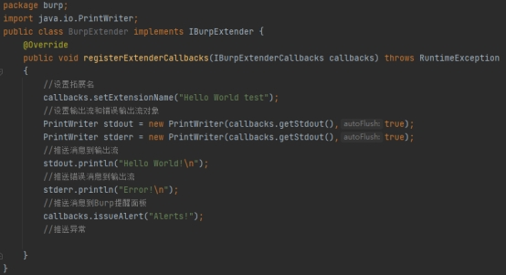
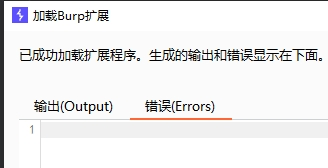
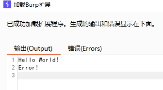
我们接着来写一个带有图形化选项卡的小插件。带有UI的插件在查阅了一些资料后发现需要Java中AWT和Swing的支持，对Java开发较为熟悉的同学开发起来还是很友好的，这里简单科普一下AWT和Swing。
AWT(Abstract Window Toolkit)，中文译为抽象窗口工具包，该包提供了一套与本地图形界面进行交互的接口，是Java提供的用来建立和设置Java的图形用户界面的基本工具。AWT中的图形函数与操作系统所提供的图形函数之间有着一一对应的关系，称之为peers，当利用AWT编写图形用户界面时，实际上是在利用本地操作系统所提供的图形库。由于不同操作系统的图形库所提供的样式和功能是不一样的，在一个平台上存在的功能在另一个平台上则可能不存在。为了实现Java语言所宣称的“一次编写，到处运行(write once, run anywhere)”的概念，AWT不得不通过牺牲功能来实现平台无关性，也即AWT所提供的图形功能是各种操作系统所提供的图形功能的交集。
Swing 是一个为Java设计的GUI工具包。Swing是JAVA基础类的一部分。Swing包括了图形用户界面（GUI）器件如：文本框，按钮，分隔窗格和表。
Swing提供许多比AWT更好的屏幕显示元素。它们用纯Java写成，所以同Java本身一样可以跨平台运行，这一点不像AWT。它们是JFC的一部分。它们支持可更换的面板和主题（各种操作系统默认的特有主题），然而不是真的使用原生平台提供的设备，而是仅仅在表面上模仿它们。这意味着你可以在任意平台上使用JAVA支持的任意面板。轻量级组件的缺点则是执行速度较慢，优点就是可以在所有平台上采用统一的行为。
画图的时候我用了Jpanel和Jbutton，用AWT来捕获鼠标事件，实现点击按钮触发事件。通过getTabCaption和getUiComponent给选项卡命名，

然后创建界面和按钮jPanelMain = new JPanel();JButton jButton = new JButton(“Test Button”);
加载成功后可以看到上了一个标签
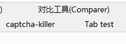
以及一个居中的按钮
每按一次会输出一个Clicked
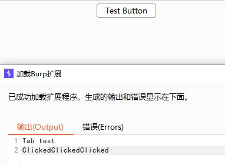
大致了解了各个API的方法后，我们可以尝试来写一些能够提升我们工作效率的事，首先实现捕获其他模块的消息，以便对消息进行处理。根据官方文档调用以下方法：
callbacks.registerHttpListener()
注册HTTP监听器
callbacks.registerProxyListener()
注册Proxy监听器
callbacks.registerScannerListener()
注册Scanner监听器
callbacks.registerExtensionStateListener()
注册ExtensionState监听器
callbacks.registerScopeChangeListener()
注册ScopeChangeListener监听器
首先还是框架的搭建，在公共类BurpExtender中implements所需要调用的接口IBurpExtender, IHttpListener, IProxyListener, IScannerListener, IExtensionStateListener, IScopeChangeListener，引入接口后需要再进行方法重写，不然会报错

根据文档补全接口内容，写上对应的输出
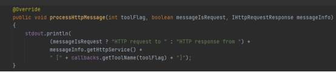
编译后加载插件，此时可以看到输出是空白的，因为该插件用于捕获数据，
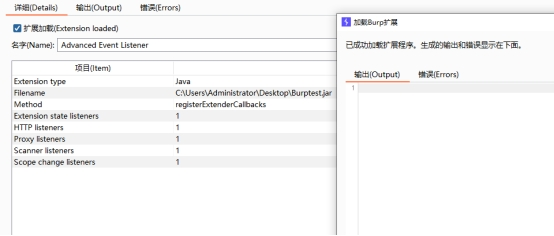
我们打开Proxy拦截后访问几个网页，在历史中已经记录了很多数据
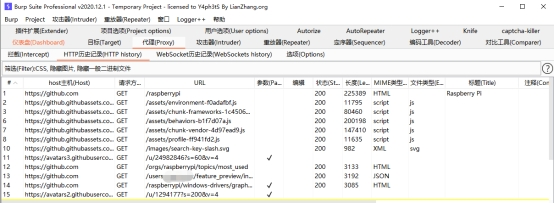
再来看我们的插件输出窗口，输出了大量的日志
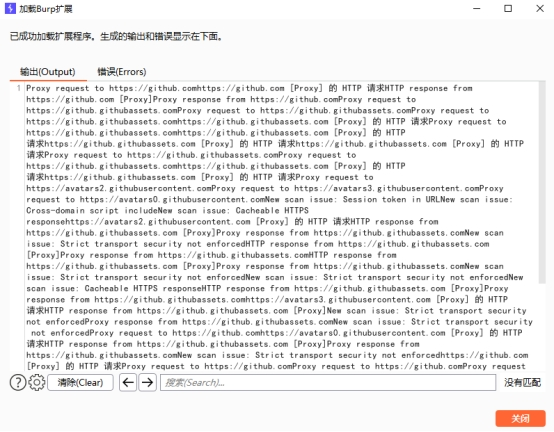
如果觉得Burpsuite自带的分析工具不好用的话可以直接通过这个插件将捕获到的事件进行输出，只需要在插件控制的输出页面选择保存到文件即可
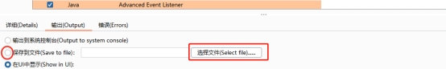
该插件的完整代码如下：
package burp;
import java.io.PrintWriter;
public class BurpExtender implements IBurpExtender, IHttpListener,
IProxyListener, IScannerListener, IExtensionStateListener, IScopeChangeListener
{
private IBurpExtenderCallbacks callbacks;
private PrintWriter stdout;
@Override
public void registerExtenderCallbacks(IBurpExtenderCallbacks callbacks)
{
this.callbacks = callbacks;
callbacks.setExtensionName("Advanced Event Listener");
stdout = new PrintWriter(callbacks.getStdout(), true);
callbacks.registerHttpListener(this);
callbacks.registerProxyListener(this);
callbacks.registerScannerListener(this);
callbacks.registerScopeChangeListener(this);
callbacks.registerExtensionStateListener(this);
}
@Override
public void processHttpMessage(int toolFlag, boolean messageIsRequest, IHttpRequestResponse messageInfo)
{
stdout.println(
(messageIsRequest ? "HTTP request to " : "HTTP response from ") +
messageInfo.getHttpService() +
" [" + callbacks.getToolName(toolFlag) + "]");
}
@Override
public void processProxyMessage(boolean messageIsRequest, IInterceptedProxyMessage message)
{
stdout.println(
(messageIsRequest ? "Proxy request to " : "Proxy response from ") +
message.getMessageInfo().getHttpService());
}
@Override
public void newScanIssue(IScanIssue issue)
{
stdout.println("New scan issue: " + issue.getIssueName());
}
@Override
public void extensionUnloaded()
{
stdout.println("Extension was unloaded");
}
@Override
public void scopeChanged() {
stdout.println("ScopeChanged!");
}
}
其实带有图形化的插件和正常的Java程序差不多，开发过程也就和Java差不多，我们再来看看添加右键菜单。效果如下图所示：
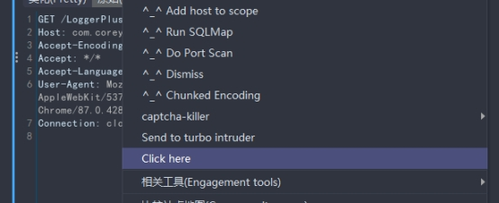
再来讲讲python进行插件开发的过程，python作为一门轻量级脚本语言确实在我们在本系列的第一篇插件安装中已经安装了jython所以可以直接用py进行开发后导入，无需再经过Jython的配置，但是为了提高开发效率，这里推一下国外一个大佬写的Jython-Burp-API,在Github上的仓库地址如下：
https://github.com/mwielgoszewski/jython-burp-api
国际惯例，讲语言的第一个输出是Helloworld，我们来看看如何输出。Python的代码比Java要简洁很多
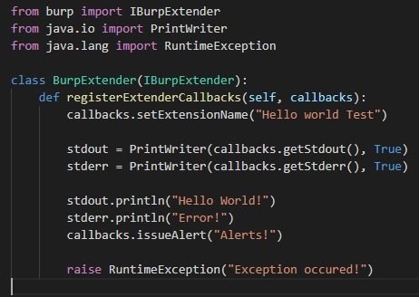
不过py的加载需要一点时间
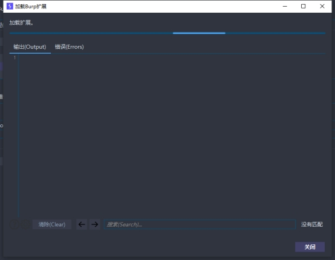
加载完成后就可以成功输出了
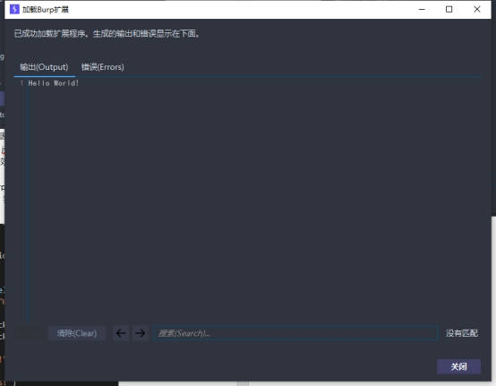
我们继续讲右键菜单的开发，首先需要配置好jython用来协调java和python，开始引入依赖，然后还是框架中的BurpExtender，注册ExtenderCallbacks，通过createMenuItems创建右键菜单，通过自定义的outtt方法输出
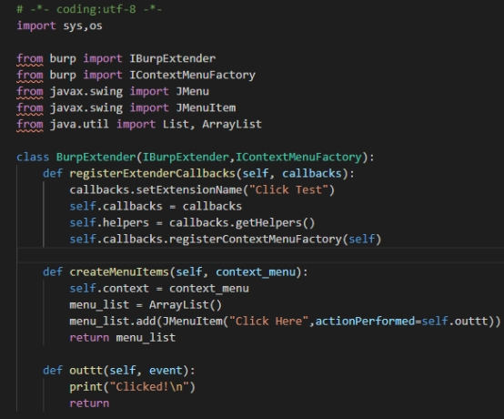
最终实现效果如下：
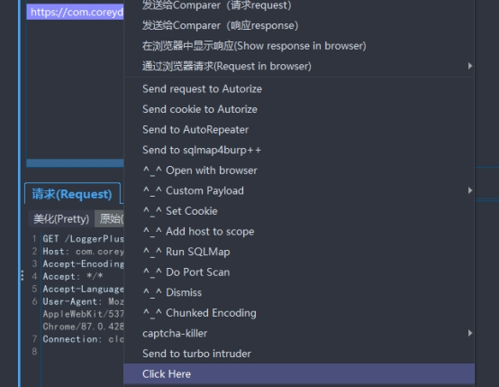
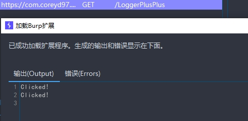
该讲的基础功能都讲的差不多了，接下来就是实用性的插件开发了。
因为jython好像对python3的支持不是特别友好，大部分python的插件都用py2来开发，所以我们也先用py2来实现一个功能。在渗透测试过程中DNSlog应用还是非常多的，我们可以尝试通过burp中一个类似DNSlog功能的实现，在前文中也有提到就是burp的Collaborator，
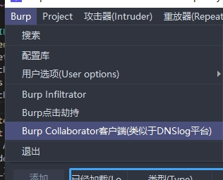
由于我使用了汉化插件，所以显示可能有所不同，而且汉化中也标注了和DNSlog类似，原版的显示为
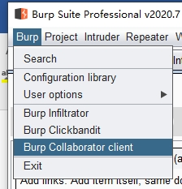
这里对这个模块做一个简要介绍，点击启动后如下：
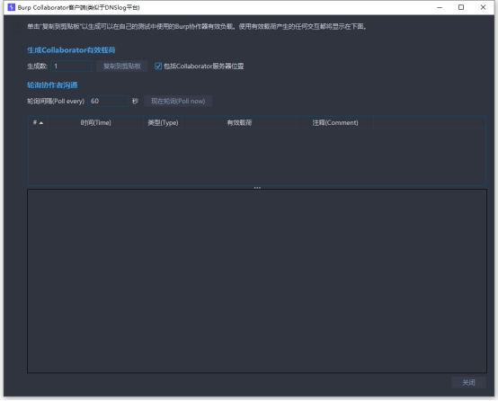
复制链接地址即可得到请求的地址，在浏览器中发起请求可以收到记录
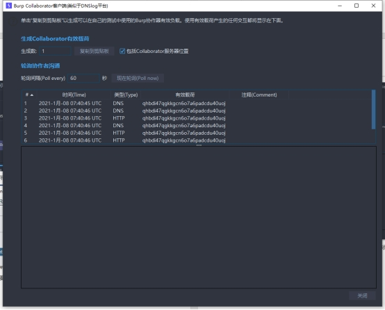
我们可以在本地生成一个轮询服务器，然后通过插件来捕获相关请求，这个服务器同样可以远程配置，在项目设置的杂项中可以看到针对collaborator的的相关配置
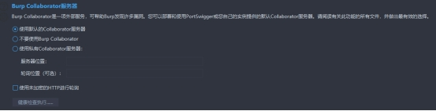
其中的健康检查可用于测试当前服务器相关请求方式的支持，可以看到我的当前环境下是都可以使用的，在部分环境下有些功能可能无法使用
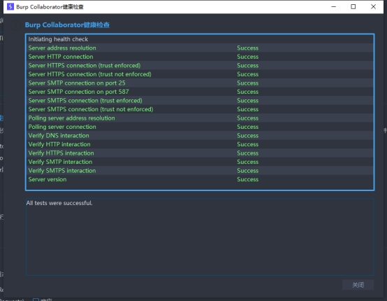
我们根据之前介绍的API参考中，学习一下用法。首先是import调用，我们在这个事例中使用以下调用
from burp import IBurpExtender
from burp import IBurpCollaboratorInteraction
from burp import IBurpCollaboratorClientContext
然后按需要调用的方法进行声明
class BurpExtender(IBurpExtender,IBurpCollaboratorInteraction , IBurpCollaboratorClientContext):
注册组件
registerExtenderCallbacks
设置一个组件名
callbacks.setExtensionName(“collaborator test”)
生成地址
addr = collaboratorContext.generatePayload(True)
然后设置一个永真循环用来不断轮询，实现结果的实时输出
while True:
res = collaboratorContext.fetchCollaboratorInteractionsFor(addr)
payload_len = len(res)
if payload_len:
print "request success",res
for dnslog in res:
print dnslog,dnslog.getProperties()
print dnslog.getProperty("type"), dnslog.getProperty("interaction_id")
break
else:
print "request failed\n"
轮询时间可以用sleep函数进行控制，不过需要引入time库
完整的代码如下
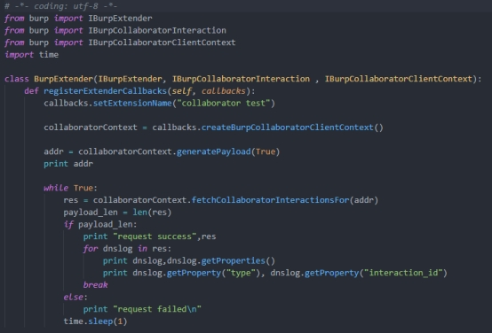
加载插件后我们可以看到首先打印出了生成的服务器地址以及requests failed
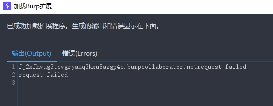
当我们向目标服务器发起请求时就会进行其他输出
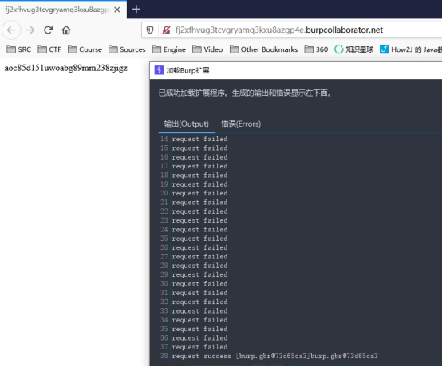
也可以通过curl等方式发起请求。并且在数据输出方面也可以参考前文的方法直接输出在Event log里使用issueAlert()的方式直接输出到dashboard的Event log中。
另外还可以用burp直接实现一些其中没有的漏洞扫描，例如fastjson的RCE，Shiro反序列化等等。可以将这些集成到一个插件模块中去，通过上面给大家讲的方法，实现右键发送到漏扫模块，或者对数据包返回进行主动扫描，这些可以参考github上已开源的工具，有各种相关功能实现的插件源码可以给大家学习，写这篇文章的时候试着写了几个漏扫插件，简单漏洞几行就写完了挺方便的，集成的时候复杂的漏洞可能因为考虑欠佳导致不如大佬写的好用，所以以下省略大量漏扫插件的开发，可以根据参考链接去看看别人的插件。
参考链接：
https://github.com/Mr-xn/BurpSuite-collections
https://portswigger.net/burp/extender/
http://drops.wooyun.org/tools/14040